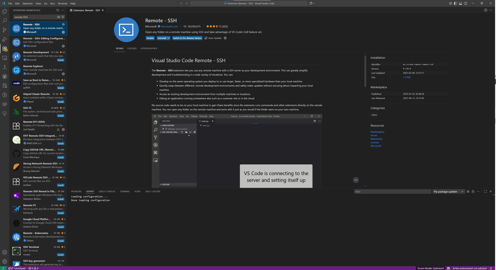
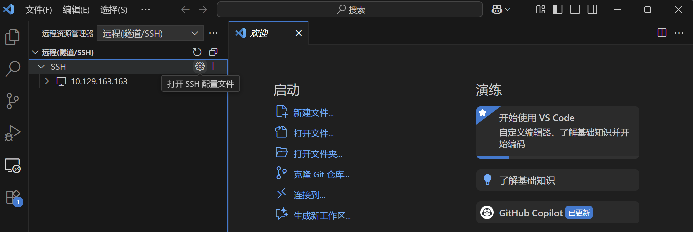
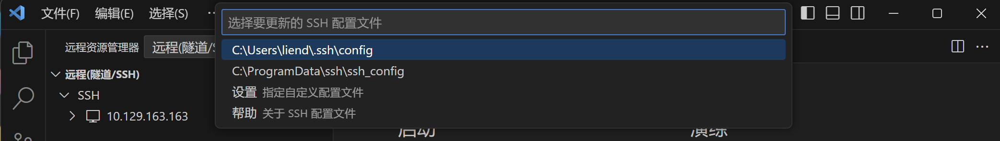
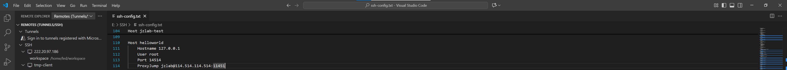

Appendix: Log in to the server account provided to you using Visual Studio Code
Create configuration command
If you have applied to the teaching assistant for a server account, we will typically return two commands similar to those shown below, along with their corresponding passwords.
ssh -p <port1> jzlab@<IP>
ssh -p <port2> root@127.0.0.1
Based on these two commands, we need to assemble a new string in the following format:
Host <your favourite name>
Hostname 127.0.0.1
User root
Port <port2>
ProxyJump jzlab@<IP>:<port1>
For example, if the command you receive is
ssh -p 11451 jzlab@114.514.114.514
ssh -p 14514 root@127.0.0.1
Then you can obtain the string
Host helloworld
Hostname 127.0.0.1
User root
Port 14514
ProxyJump jzlab@114.514.114.514:11451
Install Visual Studio Code
Visit the official Visual Studio Code website, where you will find the download button readily available. Please ensure you download the appropriate version for your operating system.
Then open the installation package you have downloaded and follow the step-by-step instructions to complete the installation.
Install the remote-ssh plugin
Once you've downloaded Visual Studio Code, you'll need to install the SSH-related extensions. First, open your Visual Studio Code. Then locate the extensions icon in the left-hand sidebar. Upon clicking the icon, an expanded list and a search box appeared. Enter “remote-SSH” in the search box to locate the corresponding plugin.Finally, select the corresponding result and click “Install”. 
Add configuration command
Upon installing the Remote-SSH extension, a new icon resembling a monitor symbol appears in the left-hand pane of VS Code, labelled Remote Explorer. Clicking this icon displays all SSH connections previously accessed through VS Code. When you hover your mouse over the SSH folder, you will notice a gear icon appearing to the right of SSH. 
Clicking this gear icon will prompt you to select a configuration file. Simply choose the default option, and you will then open the SSH configuration file. 
Next, paste the newly acquired configuration command onto the last newly created line, maintaining its formatting.

Finally, remember to save!
Start your journey
When you wish to connect to your server account, open Visual Studio Code and click the green or blue square in the bottom-left corner, which represents the creation of a new remote connection. A list will then appear at the top; select “Connect to Host”. You will then notice “helloworld” (or your select name) appearing in this list. Click on it to initiate the SSH connection. Please note you will need to enter your password twice: once for ssh -p <port1> jzlab@<IP> and once for ssh -p <port2> root@127.0.0.1. If all proceeds smoothly, you will enter the VSCode workspace and can now try this lab.